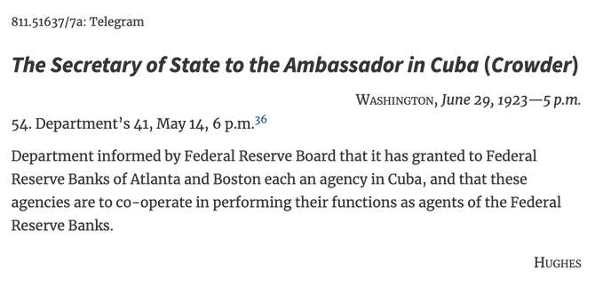

Los Hilos de Monik
La oficina de la Reserve Federal de USA en Cuba
Publicado el 30 de mayo de 2021 - 17 tweets - Hilo original en Twitter
1
En 1923, se abrió en La Habana, la primera y única oficina de la Reserva Federal de los Estados Unidos que operó en un país extranjero.
¿Por qué? Pues los bancos canadienses comenzaron a interesarse en monopolizar la actividad bancaria en Cuba y ello suponía un peligro.
2
En una carta al Secretario de Estado, el embajador Crowder afirmaba que el Royal Bank of Canada había adquirido el banco de Pedro Gomez Mena, así como 7 sucursales bancarias del Banco Mercantil de Cuba.
El Canadian Bank of Commerce negociaba con el banquero Jacinto Pedroso...
3
Y el Royal Bank of Canada estaba intentando adquirir el banco de Gelats.
El embajador afirmaba que si existiese en Cuba una sucursal de la Reserva Federal, esos banqueros no venderían a Canadá. Y que además, los intereses bancarios disminuirían.
PAPERS RELATING TO THE FOREIGN RELATIONS OF THE UNITED STATES, 1923, VOLUME I
4
"In my opinion the establishment here of active agency of Federal Reserve Bank would meet with favor among businessmen and would add to the potential influence of the United States here where at present our banking influence is apparently on the wane", concluía el embajador.
5
La Reserva Federal está dividida en 12 distritos. La Habana tuvo representación de 2: Boston y Atlanta.
Boston se encargaba del negocio de cables utilizado para transferir fondos desde Cuba, pues la mayoría de los bancos americanos en La Habana tenían su sede en NY o Boston.
6
Atlanta procesaba y distribuía el dinero a los bancos locales. Su sucursal en Jacksonville era la responsable de emitir los 40 millones de dólares que circulaban en Cuba.
El mayor desafío: muchos de los billetes eran falsos o no aptos para usar.
7
Una vez reunidos los tres, tuvo lugar una especie de ceremonia, donde tanto Gómez como Martí elogiaron a Masó frente a las tropas.
Acá dejo la descripción de Miró Argenter de lo que fuera el último discurso de José Marti.

8
La Reserva Federal de Atlanta tenía la responsabilidad de proveer billetes adecuados para la circulación. Una de las ventajas de esta oficina en La Habana fue que redujo la necesidad de los bancos locales de almacenar grandes cantidades de "moneda limpia" en sus bóvedas.
9
El mayor desafío al que se enfrentó esta oficina, tuvo lugar en abril de 1926.
Rumores sobre el quiebre de un banco canadiense provocaron que el viernes 9 de abril, la oficina de la Reserva tuviese que desembolsar en un día los 10 millones de dólares de su reserva de divisas.
10
En 24 hrs la Reserva Federal de Atlanta tuvo que preparar un paquete de rescate de 26,5 millones de dólares en efectivo para Cuba.
Pero era demasiado dinero para transportar en avión: se llevó en 3 vagones de tren de Atlanta a Cayo Hueso, y luego en lancha hasta Cuba.
11
El Vicegobernador Campbell lideró la expedición, llevando 3 guardias, 2 contadores y al gerente de la sucursal de Jacksonville.
El tren llegó a las 5pm del domingo a Cayo Hueso. Transportaron el dinero a un barco del servicio postal cubano, que desembarcó en Cuba a las 2am.
12
Los 26,5 millones fueron llevados a la oficina de la Reserva Federal en La Habana, que a su vez distribuyó el dinero a las sucursales bancarias antes de las 7am del lunes.
Incluso un periódico publicó fotos del equipo de rescate que evitó la catástrofe financiera.
13
Poco tiempo después el equipo de Atlanta fue investigado: al parecer, el viaje de Cayo Hueso a La Habana fue una gran fiesta donde todos terminaron borrachos. Una comisión viajó a La Habana y entrevistó al staff del hotel. También el servicio secreto investigó en Atlanta.
14
Al final se descubrió que la denuncia provino del gerente de la Reserva Federal de Boston en La Habana, y que no hubo tal fiesta.
Esto ocasionó se le diera a la oficina de Atlanta el manejo de todas las operaciones en La Habana.
15
La oficina de Boston en Cuba se cerró el 1 de enero de 1927 y sus funciones se transfirieron a la oficina de Atlanta. Sin embargo, la lucha de cuatro años terminó en una victoria vacía. Irónicamente, 1927 fue el último año rentable para la agencia de La Habana.
16
El negocio decayó y la operación se hundió cada vez más. En 1934, Atlanta solicitó el cierre de la agencia pero el gobierno cubano y el Departamento de Estado se resistieron. Un acuerdo repartió las pérdidas de la operación de La Habana entre los 12 bancos de la Reserva.
17
Finalmente, el 30 de septiembre de 1938, las puertas se cerraron definitivamente en la agencia de La Habana y en un capítulo exótico de la historia del Banco de la Reserva Federal de Atlanta.